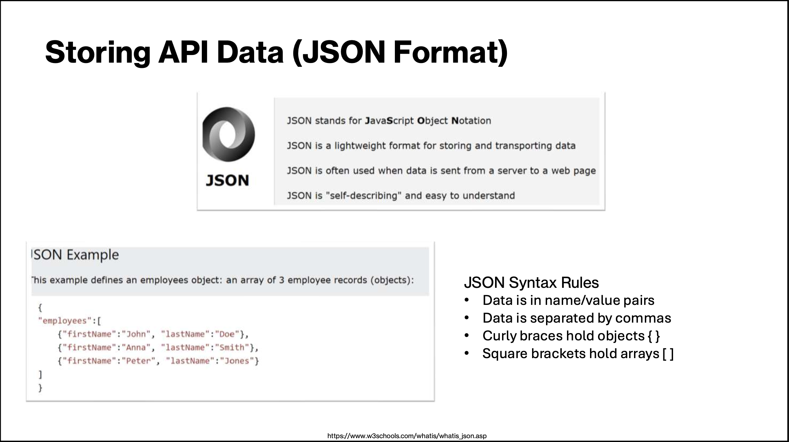

Extracting Data From Websites Using API - A Beginners Guide#
By Vandana Srivastava
AI/Data Science Specialist, University Libraries, USC
Definition and Purpose of APIs#
What is an API?
Application Programming Interface
An API defines the methods and data formats that applications use to communicate effectively with each other.
Purpose of APIs
The primary purpose of APIs is to enable integration between different software applications, enhancing functionality and interoperability.
Benefits for Developers
APIs allow developers to leverage existing services without rebuilding them, saving time and resources in the development process.
How API Works?#
API allows communication and sharing of information or data between two programs or softwares
To get a desired information from the server, you as the client would send a request
which is a combination of URL and HTTP methods.
In addition to the method, we can also add request parameter or header to modify the response we get from the server, sent by the API.
Using API to extract data is straight forward
it provides access to dedicated section of the required data through an endpoint
Reduces time to extract data
Types of APIs (REST, SOAP, GraphQL)#
REST APIs
REST APIs use a stateless communication* protocol and are widely
used for web services, enabling scalability and flexibility.
SOAP APIs SOAP APIs are protocol-based and rely on XML for message formatting, providing a rigid structure and robust security features.
GraphQL APIs GraphQL allows clients to request exactly the data they need, making it efficient and flexible for modern applications.
* each request from a client to the server is treated independently, and the server does not maintain any session information or state between requests, requiring all necessary data to be included within each request itself.
Common Use Cases for APIs#
Data Retrieval
APIs enable the retrieval of data from online services, allowing
applications to access real-time information easily.
Application Integration
APIs facilitate the integration of third-party applications, enhancing functionality and interoperability between different systems.
Task Automation
APIs are used to automate repetitive tasks, making processes more efficient and reducing manual effort.
Payment Processing
APIs simplify payment processing, allowing businesses to securely handle transactions through various payment gateways.
Registering and Obtaining API Keys#
Account Registration
To start using an API, you must first register for an account with the API provider.
Obtaining API Keys
After registration, you can request your unique API keys, which are essential for accessing the API.
Authentication Process API keys are used to authenticate your requests, ensuring secure access to the API’s resources.
API Documentation and Endpoints#
Importance of API Documentation
API documentation is essential for developers as it guides them in understanding how to properly use an API.
Endpoints and Methods
Understanding endpoints and request methods is vital for making successful API calls and ensuring proper data retrieval.
Parameters and Response Formats
Documentation includes details on parameters and response formats, crucial for handling requests and interpreting responses correctly.
Use Case: Extracting NY Times Article Data Using Their API#
Step 0: What Data Should Be Extracted#
Decide on the kind of data you are interested in.
For example, we are interested in:
Extracting articles from first page of the NY Times newspaper since 2000Read website requirements and specs for downloading data using API
New York Times has rate limits to call their API.
They allow 500 requests per day and 5 requests per minute.
You should sleep 12 seconds between calls to avoid hitting the per minute rate limit.
If you need a higher rate limit, pleact contact code@nytimes.com
NY Times FAQ.
Step 1: Getting API Key#

Extracting Data Using Python#
Storing API Data#

Making API Requests (GET, POST, PUT, DELETE)#
GET Method
The GET method is used to retrieve data from a server. It is the most commonly used HTTP request method.
POST Method
The POST method is used to send data to a server. It is typically used for submitting forms or creating new resources.
PUT Method
The PUT method is used to update existing data on a server. It replaces the current representation of the target resource.
DELETE Method
The DELETE method is used to remove data from a server. It is a way to delete resources from a web application.
Handling Responses and Error Codes#
Importance of Response Handling
Proper response handling is crucial for understanding the data returned by API calls and ensuring correct application behavior.
Parsing Returned Data
Parsing the returned data allows developers to extract necessary information and utilize it effectively within applications.
Managing Error Codes
Managing error codes is essential for troubleshooting and ensuring that applications can gracefully handle unexpected issues.
Data Processing and Storage#
Storing Data in Databases#
Importance of Storage
Storing processed data correctly in a database is essential for maintaining data integrity and availability.
Choosing the Right Database
Selecting the appropriate database system is crucial for achieving optimal performance and scalability based on the data needs.
Schema Design
Effective schema design is key to ensuring efficient data retrieval and management within the database.
Data Cleaning and Validation#
Importance of Data Accuracy
Ensuring data accuracy is crucial for making informed decisions based on reliable information.
Filtering Invalid Entries
The cleaning process involves identifying and removing invalid or irrelevant data entries to improve data quality.
Correcting Inconsistencies
Data validation includes correcting discrepancies in datasets to maintain uniformity and reliability.
Best Practices and Considerations#
Optimizing Performance and Efficiency#
API Performance Optimization
Optimizing API calls can significantly enhance application performance by reducing latency and improving response times.
Caching Responses
Implementing caching mechanisms for API responses helps in reducing repeated data fetches, leading to improved efficiency.
Minimizing Request Payloads
Reducing the size of request payloads can decrease processing time and enhance overall application speed.
Monitoring and Maintaining APIs#
Importance of Monitoring
Regular monitoring is essential to maintain the performance of API integrations and prevent disruptions in service.
Tracking Usage Patterns
Keeping track of usage patterns helps identify trends and optimize API performance based on user needs.
Updating API Keys
Regularly updating API keys is crucial for security and ensuring uninterrupted access to API services.
Troubleshooting Issues
Prompt troubleshooting of issues as they arise ensures that API integrations continue to function smoothly.